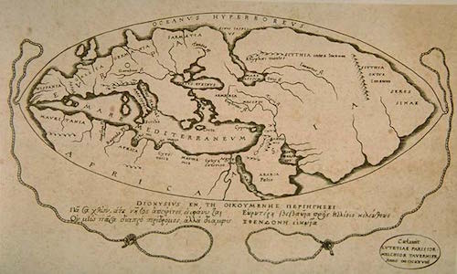
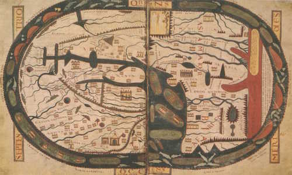
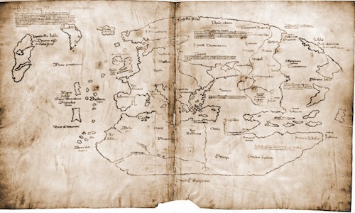
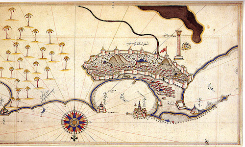
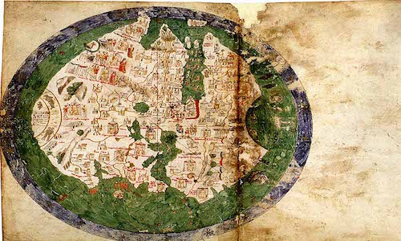
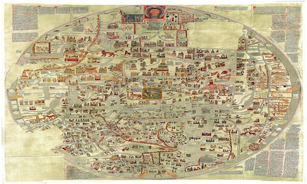

Posidonius Map(c. 150-130 BCE)

Posidonius was a Greek philosopher and polymath who traveled throughout the world.
This map reflects his theory about the position of the continents.
With near accuracy he measured the Earth’s circumference at 24,000 miles by position of the start Canopus.
Saint-Sever Beatus Map(c. 1050)

Beatus of Liebana was an Austrian monk.
This map was was featured in a manuscript that features the Commentary on the Apocalypse of Beatus of Liebana
and was based on accounts given by Isidore of Seville, Ptolemy, and the Holy Bible.
Vinland Map(c.)

There is some debate as to weather this is an authentic map from the 15th century.
If so, it depicts the early Norse settlement of Vinland.
Piri Reis Map(c.1513)

This map was created by an Ottoman admiral and cartographer named Piri Reis.
It depicts part of the western coasts of Europe and North Africa along with the coast of Brazil and various Atlantic islands.
Bianco World Map(c. 1436)

Created by Andrea Bianco, it’s an atlas comprised of ten leaves of vellum.
Most of the leaves contain navigation charts and two world maps are included, one portraying the coast of Florida.
Ebstorf Map(c.1235)

The Ebstrof map is a large map painted on thirty goat skins that were sewn together.
It was created by Gervase of Ebstorf. The map is a depiction of Jerusalem, with Rome in the center as the shape of lion.